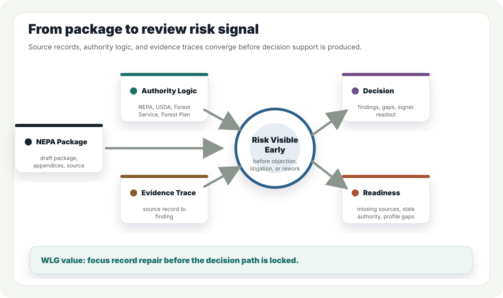
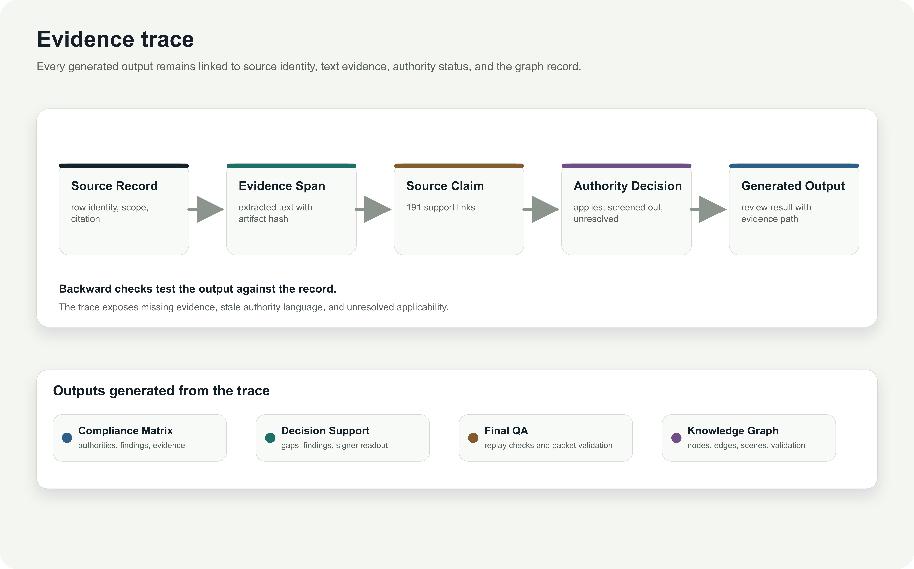
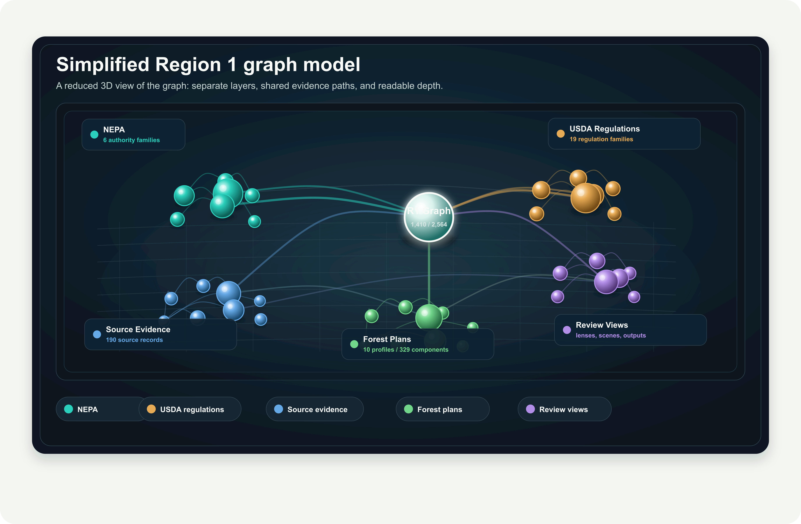

Client Brief / Core System
Region 1 Knowledge System
A fully functional Region 1 knowledge system turns fragmented source, authority, evidence, and forest-plan data into a structured relational graph. It supports defensible, efficient land exchange execution now through NEPA review, with the same foundation ready to expand into additional workflows.
Current Region 1 knowledge graph surface.
1,410Region 1 graph nodes
2,564Region 1 graph edges
35authority families
190source records

What the system organizes
- Source records, artifacts, and evidence spans.
- NEPA, USDA, Forest Service, and Forest Plan authority.
- Forest-plan profiles, components, and readiness state.
- V1 review outputs that can be traced back to source data.
Why it matters
Teams can prepare packages faster, inspect support paths, and extend the same graph foundation to new services.
Traceability Architecture
Trace Every Output to Governed Evidence
Each capability is generated from governed sources. The trail runs from workbook scope and artifact hash to evidence span, source claim, authority decision, and output.

Traceability model: the output is the end of a chain, not a free-standing conclusion. The same path supports reports, QA replay, graph views, and reverse checks.
Source boundary
Workbook scope, exclusions, partitions, catalog records, and hashes determine which materials can support review logic.
Reverse check
Generated outputs can be tested backward for unsupported claims, stale authority dependencies, missing support, unresolved applicability, and forest-plan gaps.
Knowledge Graph / Region 1
NEPA, USDA regulations, forest plans, and source evidence in one graph
The Region 1 graph presents NEPA authority, USDA regulations and procedures, source evidence, review views, and forest-plan data as connected layers without collapsing them into one undifferentiated network.

Forest plans stay separate
Forest-plan profiles and components are represented as their own layer, with readiness linked into review context instead of mixed into NEPA authority.
Authority and evidence stay inspectable
NEPA and USDA authority remain visible beside source records and evidence traces so reviewers can inspect the basis for a finding.